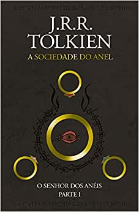
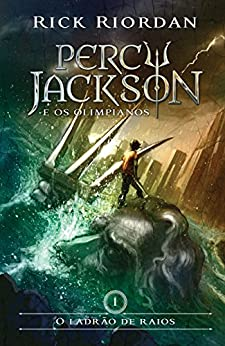
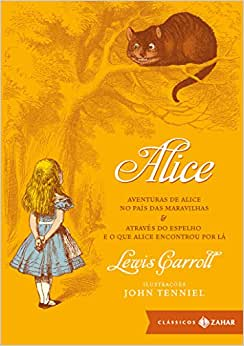

Harry Potter e a Pedra Filosofal

Sinopse
Harry Potter nunca tinha ouvido falar em Hogwarts até o momento em que as cartas começam a aparecer no capacho do número 4 da rua dos Alfeneiros. Endereçadas com um lacre púrtura, elas são repidamente confiscadas por seus tios terríveis. E então, no décimo primeiro aniversário de Harry, um homem gigantesco com olhos luzindo como besouros negros chamado Rúbio Hagrid entra intempestivamente com uma notícia assombrosa: Harry Potter é um bruxo e tem uma vaga na ESCOLA DE MAGIA E BRUXARIA DE HOGWARTS.
Uma aventura inacreditável está para começar!
Fonte:Google Book
| Data da primeira publicação | Autor | Indioma Original | Gêneros |
|---|---|---|---|
| 1999 | J. K. Rowling | Inglês | Literatura fantástica |
O senhor dos Anéis: A Sociedade do Anel
Sinopse
A Sociedade do Anel O volume inicial de O Senhor dos Anéis,lançado originalmente em julho de 1954,foi o primeiro grande épico de fantasia moderno,
conquistando milhões de leitores e se tornando o padrão de referência para todas as outras obras do gênero até hoje.
A imaginação prodigiosa de J.R.R. Tolkien e seu conhecimento profundo das antigas mitologias da Europa permitiram que ele criasse um universo tão
complexo e convincente quanto o mundo real.
A Sociedade do Anel começa no Condado, a região rural do oeste da Terra-média onde vivem os
diminutos e pacatos hobbits.
Bilbo Bolseiro, um dos raros aventureiros desse povo, cujas peripécias foram contadas em O Hobbit, resolve ir
embora do Condado e deixa sua considerável herança nas mãos de seu jovem parente Frodo. O mais importante legado de Bilbo é o anel mágico que
costumava usar para se tornar invisível. No entanto, o mago Gandalf, companheiro de aventuras do velho hobbit, revela a Frodo que o objeto
é o Um Anel, a raiz do poder demoníaco de Sauron, o Senhor Sombrio, que deseja escravizar todos os povos da Terra-média.
A única maneira de eliminar a ameaça de Sauron é destruir o Um Anel nas entranhas da própria montanha de fogo onde foi forjado.
A revelação faz com que Frodo e seus companheiros hobbits Sam, Merry e Pippin deixem a segurança do Condado e iniciem uma perigosa jornada
rumo ao leste.
Ao lado de representantes dos outros Povos Livres que resistem ao Senhor Sombrio, eles formam a Sociedade do Anel.
Alguém uma vez disse que o mundo dos leitores de língua inglesa se divide entre os que já leram O Senhor dos Anéis e os que um dia lerão
o livro.Com esta nova tradução da obra, o fascínio dessa aventura atemporal ficará ainda mais evidente para os leitores brasileiros,
tanto os que já conhecem a saga como os que estão prestes a descobrir seu encanto.
Fonte:Google Book
| Data da primeira publicação | Autor | Indioma Original | Gêneros |
|---|---|---|---|
| 1983 | J.R.R. Tolkien | Inglês | Literatura fantástica |
Percy Jackson e o Ladrão de Raios
Sinopse
Primeiro volume da saga Percy Jackson e os olimpianos, O ladrão de raios esteve entre os primeiros lugares na lista das séries mais vendidas do The New York Times.
O autor conjuga lendas da mitologia grega com aventuras no século XXI.
Nelas, os deuses do Olimpo continuam vivos, ainda se apaixonam por mortais e geram filhos metade deuses, metade humanos, como os heróis da Grécia antiga. Marcados pelo destino, eles dificilmente passam da adolescência. Poucos conseguem descobrir sua identidade.
O garoto-problema Percy Jackson é um deles.Tem experiências estranhas em que deuses e monstros mitológicos parecem saltar das páginas dos livros direto para a sua vida. Pior que isso: algumas dessas criaturas estão bastante irritadas. Um artefato precioso foi roubado do Monte Olimpo e Percy é o principal suspeito. Para restaurar a paz, ele e seus amigos – jovens heróis modernos – terão de fazer mais do que capturar o verdadeiro ladrão: precisam elucidar uma traição mais ameaçadora que fúria dos deuses.
Fonte:Google Book
| Data da primeira publicação | Autor | Indioma Original | Gêneros |
|---|---|---|---|
| 2011 | Rick Riordan | Inglês | Literatura fantástica |
Alice no País das Maravilhas
Sinopse
Quem não se lembra do Coelho Branco, do Gato de Cheshire, da Lebre de Março, do Chapeleiro Maluco, da Rainha de Copas...
e da incontornável Alice...?
As personagens que Lewis Carroll imortalizou num clássico único para todas as idades.
Viaje pelo mundo da imaginação e do nonsense onde tudo é possível!
Fonte:Google Book
| Data da primeira publicação | Autor | Indioma Original | Gêneros |
|---|---|---|---|
| 1986 | Lewis Carroll | Inglês | Literatura fantástica |
O Guia do Mochileiro das Galáxias

Sinopse
Com mais de 15 milhões de exemplares vendidos, a saga de Arthur Dent pela Galáxia conquistou fãs pelo mundo inteiro. O humor ácido e as tramas surreais de Douglas Adams se tornaram ícones de uma geração e seguem fascinando leitores de todas as idades. Reunindo todos os livros da série em uma edição de luxo, O Guia Definitivo do Mochileiro das Galáxias vai levar você por aventuras improváveis. Pegue sua toalha, divirta-se e não entre em pânico!
O Guia do Mochileiro das Galáxias – Segundos antes de a Terra ser destruída,
Arthur Dent é salvo por Ford Prefect,
um E.T. que fazia pesquisa para a nova edição de O Guia do Mochileiro das Galáxias.
Pegando carona numa nave alienígena, os dois dão início a uma alucinante viagem pelo tempo e pelo espaço.
Fonte:Google Book
| Data da primeira publicação | Autor | Indioma Original | Gêneros |
|---|---|---|---|
| 2004 | Douglas Adams | Inglês | Ficção científica |